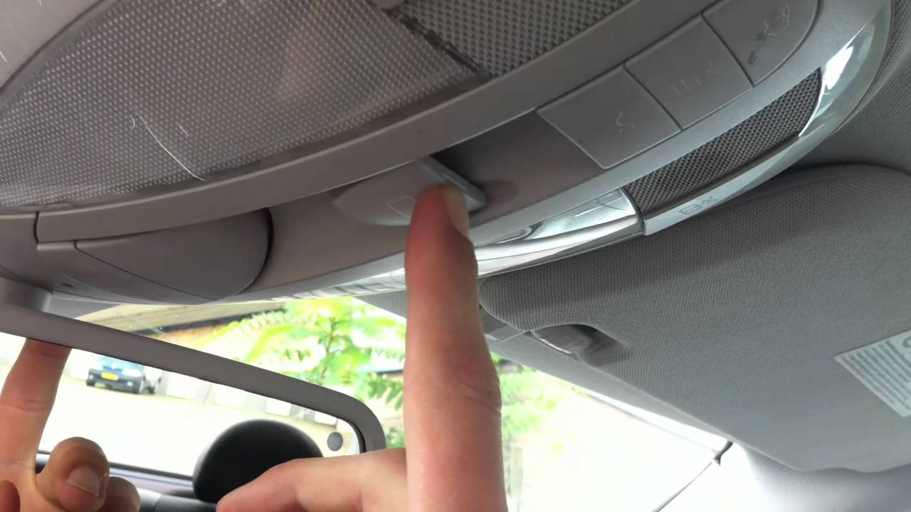
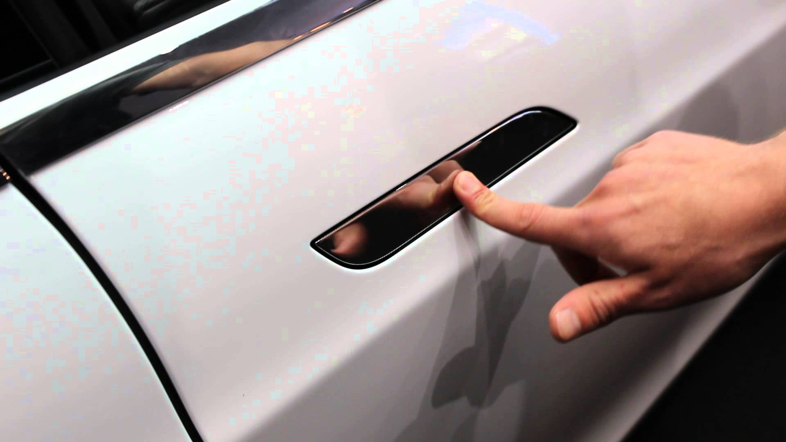
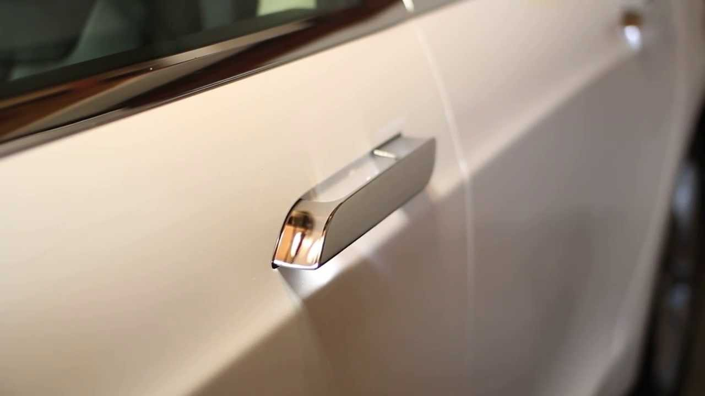

Tesla Model S的设计失误

这幅美丽的图片，就是红极一时的Tesla电动车Model S的内景。然而你有没有发现，其中有一些不大对劲的地方？虽然我看好电动汽车，它们环保，安静，运动敏捷，然而我发现Tesla的这款Model S，其实有一些严重的设计失误。
缺少硬件开关，过度依赖软件和触摸屏
纵观Model S的内景，你会发现这车里面怎么光溜溜的，就没看到几个按钮。确实如此，Model S内部设施的控制，基本上完全靠中间那个很大的触摸屏。
顶棚上有一个天窗，却没看见天窗的开关。通常说来，当人们看见门或者窗户，他们期望有一个开关，设在旁边顺手的地方。然而你在Model S里面一抬头，却看不见任何可以按下或者掰动的开关。顶棚上面几乎是光溜溜的一片：

有些人可能觉得这样的设计，比其它车子更加美观，简洁。我不想跟你讨论美学的问题，就算它更加美观吧。然而你可能没想到，这种“美观”其实有很大的代价。一个很简单的问题是：你怎么打开天窗？答案：你必须使用触摸屏！

你只要在触摸屏上找到一个叫“Controls”的页面，然后从左边的控制栏选择“Sunroof”，然后在右边会出现一个车子的图片，和一个滚动条。你把滚动条往下拉，天窗就打开了。就是这么简单！
把简单的问题搞复杂
然而，我并不认为这叫“简单”。相反，它其实让简单的问题变复杂，变麻烦了。一个很明显的现象是，其它车的天窗开关都是很明显，不需要“找”的，而Tesla的天窗开关，你要找一会儿，甚至找到了还要琢磨一下，才会知道该怎么用。我现在把导致这种结果的原因，详细分析如下：
天窗控制器不在天窗旁边。触摸屏跟天窗，处于风马不及的位置。这违反了一条基本的设计原理：控制器应该很容易找到，最好在它所控制的东西上面或者旁边。如果用户想打开天窗，他应该能够在天窗旁边，找到一个明显是用来打开它的开关。几乎所有其它车子，天窗开关都在顶棚上，不知Model S的设计者，为何要抛弃这种久经考验的设计。
触摸屏上干扰信息太多，不容易找到正确的按钮。触摸屏太大，上面显示着所有控制器的信息。这些控制器的位置，本来可以分布在车的各个部位，现在却集中到了一个仅十几寸的屏幕上面。这当然显示不下，只有放到好几个菜单里面去。
这些“软件控件”的位置，也不是很符合逻辑。例如，为什么有些控件（比如天窗）在tab里面藏着，而另外有些（比如门锁）直接露在外面？以至于你一眼看去，会不知所措。
相比之下，大部分其它车的硬件天窗控制器，附近没有很多干扰信息：

这个控制器在顶棚上，而且处于控制板的中央位置。旁边只有几个顶灯的开关。这些开关，对应着灯在顶棚上的位置。后面的灯，控制器在后面；前面的灯，控制器在前面；左边的灯，控制器在左边；右边的灯，控制器在右边……
这种排列方式，在设计学上叫做“自然映射”（natural mapping）。你不需要多次的摸索和记忆，甚至不需要看开关上的标记。只根据开关的相对位置，你就知道哪一个开关控制哪一盏灯。
查找天窗控制器的“逻辑路径”太深。从最开头的触摸屏界面，直到找到打开天窗的控件，你需要进入至少两层菜单。如果菜单之前停留在另外的状态，你还需要点击某个按钮，回到“主界面”，然后还要从上往下进入两级菜单。这种设计所需要的“逻辑路径”，长度>=3。
这种多层的“间接访问”，很容易把人搞糊涂。对年纪大点的人，几乎是不可用的。就算是年轻人，恐怕也需要摸索一阵子。如果在紧急情况下，或者事先没熟悉过这车的情况下，需要找到控制器（比如通过天窗逃生），恐怕会不知所措。
比较一下其它车子的设计吧。其它牌子车的顶棚上，一般有一个比较大的，明显是用来打开天窗的开关。不管车子当时处于什么状态，直接伸手就可以摸到这个开关。这种设计所需要的“逻辑路径”，长度=1，也就是说是直接的。
触屏的界面并不直观。仔细观察触屏上的控件，它们的操作方式并不是那么直观的。看到那个滚动条一样的东西，我该是点击呢，还是拖动呢？“VENT”，“OPEN”那几个字的位置，到底表示什么呢？我如何让天窗向上倾斜通风（tilt）？真是有点莫名其妙的感觉，恐怕要看说明书，摸索一会儿才能知道这到底怎么用。
相比之下，其它牌子汽车的硬件开关的设计，其实非常的直观。开关向后一拉，天窗就打开。向前一推，天窗就关闭。有些车子的天窗可以向上倾斜一定的角度（tilt），所以你可以把这按钮向上一推，天窗就进入倾斜通风的状态。
这种硬件开关的设计，符合了“自然映射”的原理。天窗的开关，成为了天窗的一个“模型”（model）。开关的位置，正好跟天窗平行。开关的运动方式，跟天窗的运动方式，产生一种“自然”的对应关系。开关向后，天窗也向后。开关向前，天窗也向前。开关被向上推，天窗也向上倾斜。这是非常好的设计。
触感，力反馈和行车安全
触摸屏缺乏触感和“力反馈”，无法进行“盲操作”。由于触摸屏是平的，所以它无法提供触觉和力反馈。你无法光靠手就摸到按钮的位置，而必须用眼睛看屏幕。当你找到并且拖动屏幕上的滚动条，你的手指不能得到任何力和振动的反馈。你不能立即感觉到，是否已经真的触发了“开天窗”这个操作。只有当天窗开始移动，你才知道刚才的操作是否成功。
相比之下，硬件天窗开关具有很大的优势。有些车子的天窗开关，设计得符合人体工学，正好符合你的手指的形状。摸起来容易，掰起来舒服，有感觉。手往上一摸，就能找到天窗控制器，之后不用眼睛就能操作。
像天窗开关这种“盲操作”，在开车的时候特别重要，因为开车时你的眼睛应该随时注视前方的道路。如果眼睛开小差去看屏幕了，就可能出车祸。这就跟开车时用手机发短信一样危险。触摸屏看起来很酷，而其实是降低了汽车的安全性。
系统可靠性：触摸屏是“中央薄弱环节”
仔细观察一下Model S，你会发现它的内部几乎没有硬件的开关。几乎所有的设施：天窗，空调气孔，窗户，门，后备箱，充电盖，…… 全都是用这个触摸屏来控制。
从系统设计的角度来看，这个触摸屏就是一个“中央薄弱环节”（single point of failure）。只要触摸屏一出问题，你就会失去对几乎所有设施的控制。根据这篇文章，有的Tesla用户报告说，他的Model S在12000英里的时候，触摸屏突然坏掉，以至于门把手都没法用了！
Just before the car went in for its annual service, at a little over 12,000 miles, the center screen went blank, eliminating access to just about every function of the car…
相比之下，其它汽车的硬件开关位置是分散的，它们的电路逻辑是相对独立的。一个开关坏掉了，另外一个还可以用。其它车子的屏幕，一般只用来显示倒车摄像信息，以及音乐娱乐等无关紧要的东西。Tesla用这个屏幕来控制所有的配件，真的是发挥过度了。
门把手的设计问题
Model S的门把手设计也有问题。它的门把手是电动的，而其它车的门把手，都是机械的。在停止的状态，Model S的门把手会自动缩回去，不漏一点缝隙：

当你接近车子的时候，门把手内部的电机会让门把手“浮出来”，这样你就能拉开车门：

按照Tesla设计师的思路：“当你第一次接近这部车的时候，你首先接触到的是门把手：这需要是一个记忆深刻的经历…… 当你走近的同时，门把手伸出来—就好像是这车已经开始，想起你……”
As you approach the car for the first time, the first contact you have with the vehicle is through the door handle: it needs to be a memorable experience […] The idea of this door handles that protrudes from the car as you approach it – [it’s like] the car is already thinking for you.
多么浪漫，多么诗情画意呀，一部会想得起你的车…… 然而就像这位设计师所说，它恐怕只会给你好的第一印象。实际用的时候，问题就来了。在寒冷的地区，车停在外面，缩进去的门把手会被冰雪覆盖。等你要开门的时候，才发现门把手被冻住，出不来了。另外上一节也提到了，有人的触摸屏（软件）出了故障，也会导致门把手出不来。一旦出了这些事情，你就完全失去了打开车门的能力。
没有任何另外一个牌子的汽车，采用像这样的门把手设计。由于它们的门把手是机械的，就算上面有点冰，一拉把手，冰就碎掉，门就开了。如果实在冻得严重了，你把冰稍微凿一下，一拉就开。
Tesla别出心裁，搞得门把手完全跟车门平齐，连个可以用力的地方都没有。由于把手和车门之间的缝隙很小，冻在里面的冰没法凿开。很多人发现这是个讨厌的问题。看看这篇讨论，你就会发现人们为了这个门把手，费了多少脑筋，想出五花八门的解决方案：
- 提前远程启动车子，让内部温度起来，化掉把手上的冰
- 往门把手上泼热水
- 放热水袋放在门把手上
- 停车的时候在上面贴一块透明胶，早上起来把胶布撕掉
- 用电吹风吹
- ... ...
不管这些方式有没有效果，你都可以看到，这门把手的设计，其实带来了不必要的麻烦。这样的门把手设计，除了看起来很“未来”，很“可爱”，几乎没有任何实用价值。哎，买了辆酷车，活得可真累。
人体工学和舒适性问题
另外，我发现Model S的触摸屏，其实在一个很不舒服的位置。如果我靠在司机的座位上，我的手是无法顺利地碰到屏幕右边的。我必须启用我的腹肌，稍微坐起来一点，努力伸出右手，才能够得着那个位置。
如果触摸屏的位置稍微往下放一点，倾斜度降低一些，就会方便很多。另外，这个触摸屏真的不需要做那么大。
另外一个奇葩的地方是，触摸屏下方，直到座位中部，有一片很低的，光溜溜的平面，像个微型的保龄球球道 :P

这貌似是用来放随身物品的。然而这个空间，由于位置和形状的问题，恐怕不会得到有效的利用。由于平台位置太低，几乎到了地板上，如果往里面放置物品，拿起来会非常的不顺手，甚至需要弯腰下去，而且恐怕会被不小心踢翻。因为整个平面是光滑的，中间也没有挡板，车子加减速时，东西可能会到处乱跑。从艺术的角度看，这个区域的边界，在视觉上跟触摸屏没有形成线条的连接，感觉不美观。
另外有用户反映，Model S的咖啡杯座，被设置在一个很容易被手肘碰翻的位置。某些Tesla的“专家用户”对此的建议是，去买“防溅”的咖啡杯。有些聪明人甚至自己设计，并且用3D打印机山寨了一个架子来放咖啡：

我对此举动非常的无语。本来Tesla的设计师应该做好的东西，居然需要自己动手。很不可思议的是，这样不舒服的车，被叫做“豪华车”，价钱是其它牌子的两三倍……
可靠性问题
虽然这篇文章里面，我只想指出Model S的设计问题，它其实也有很多可靠性的问题。
最近的一些报道指出，由于动力系统的问题，2/3以上的早期Model S，动力系统的寿命都不会超过6万英里。Consumer Reports也报道，Model S的可靠性“低于平均水平”。报告指出Model S的各种质量问题：电池，传动系统，天窗漏水，各种部件“咯吱”的响声，等等。另外一篇Consumer Report的文章，对所有的电动车进行了排名，Model S名列倒数第一。
经验的重要性
Tesla的总设计师Franz von Holzhausen，在一个采访中自豪的解释，Tesla是如何在“完全没有汽车设计经验”的背景之下，“从零开始”（from ground up）设计出了Model S。可是从上文我们已经看到了，这种盲目的对前人经验的藐视，给用户带来的，是潜在的麻烦甚至危险。以“没有经验”而自豪，盲目相信自己的“新想法”，是愚蠢和危险的做法。另外，有传言说Model S最早的设计，很多是Elon Musk自作聪明提出来的，后来其中特别不好的一些，被设计师给去掉了。
汽车的设计，很多方面是关系到人命的。车上的各种设备，为什么是那个形状，为什么在那个位置，很多都是有理由的。不是你想它是个什么样子，就可以是什么样子的。很多这些经验甚至可能是用生命换来的，经历了战火和恶劣环境的考验。这真的不是一个新的公司短短几年就可以摸索清楚的。有些设计貌似很新，很酷，很未来，像科幻电影里面的一样。直到你开始用它，才发现是有问题的。很多人把Elon Musk比作Iron Man，最后才意识到，科幻和现实是有很大区别的。以Elon Musk的背景，也许可以做出高性能的电动机，然而一辆汽车除了发动机，还有很多很多关键的方面。忘记历史就等于毁灭未来，不吸取前人的经验教训，把好的东西学过来，新的设计是很难成功的。